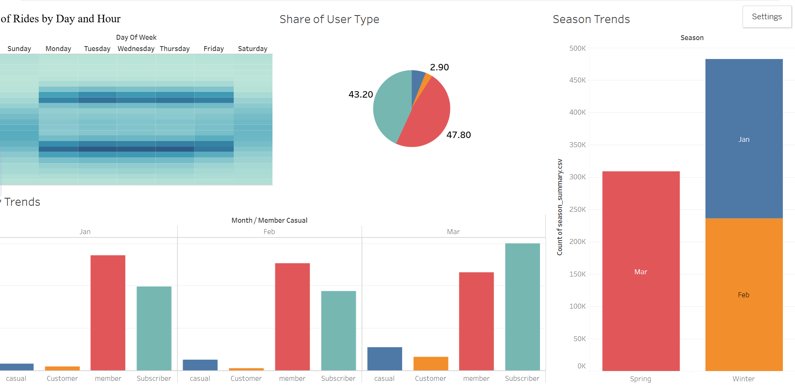

Analyzed one year of historical ride data from the Cyclistic bike-share program to uncover usage patterns between casual riders and annual members for targeted marketing strategies.

This data analysis project examined bike-sharing usage patterns to understand behavioral differences between casual riders and annual members. The analysis focused on seasonal, temporal, and usage trends to inform marketing strategies.
Casual riders averaged 40% longer trip duration than members
65% of casual rides occurred on weekends, indicating leisure usage
Summer peaks showed 300% higher ridership compared to winter
Explore the comprehensive analysis through interactive visualizations showing usage patterns and trends
Loading dashboard...
Casual riders showed longer trip durations and weekend-focused usage patterns, while members demonstrated consistent weekday commute behavior.
Ride activity concentrated between 7-9 AM and 4-7 PM on weekdays, highlighting clear commute hour patterns.
Summer months showed dramatic ridership increases, with peak activity up to 300% higher than winter periods.
Key charts and insights from the analysis dashboard
Highlights morning and evening peaks during weekdays
Share comparison between members and casual riders
Total rides by season showing clear summer peaks
Rides by user type across all months of the year